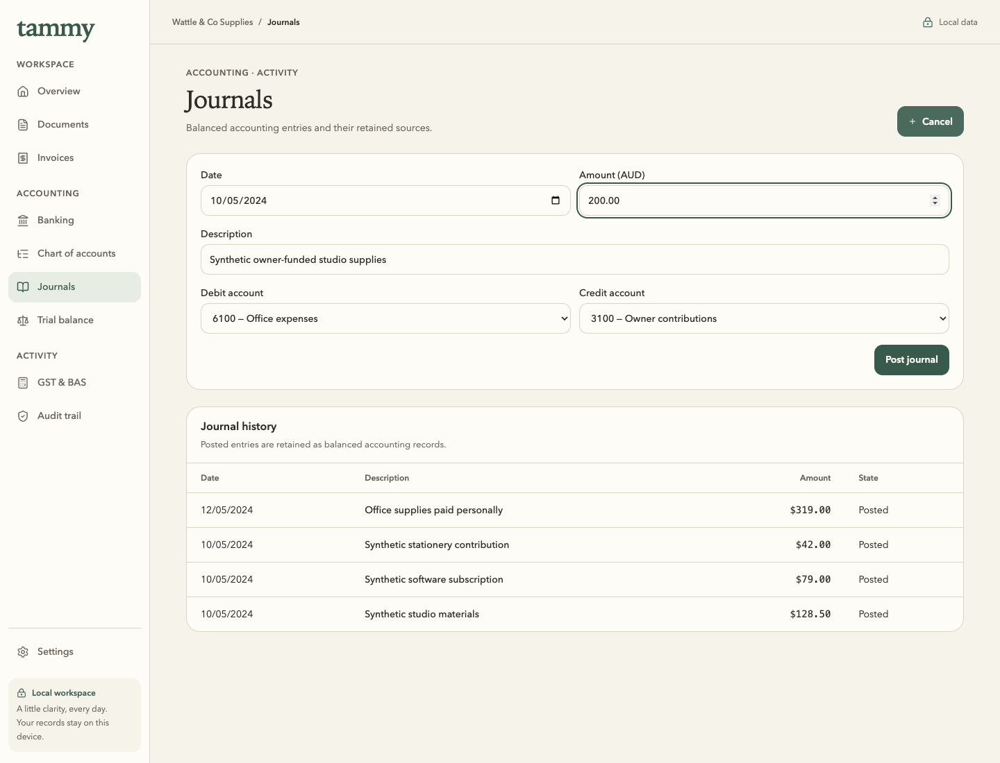
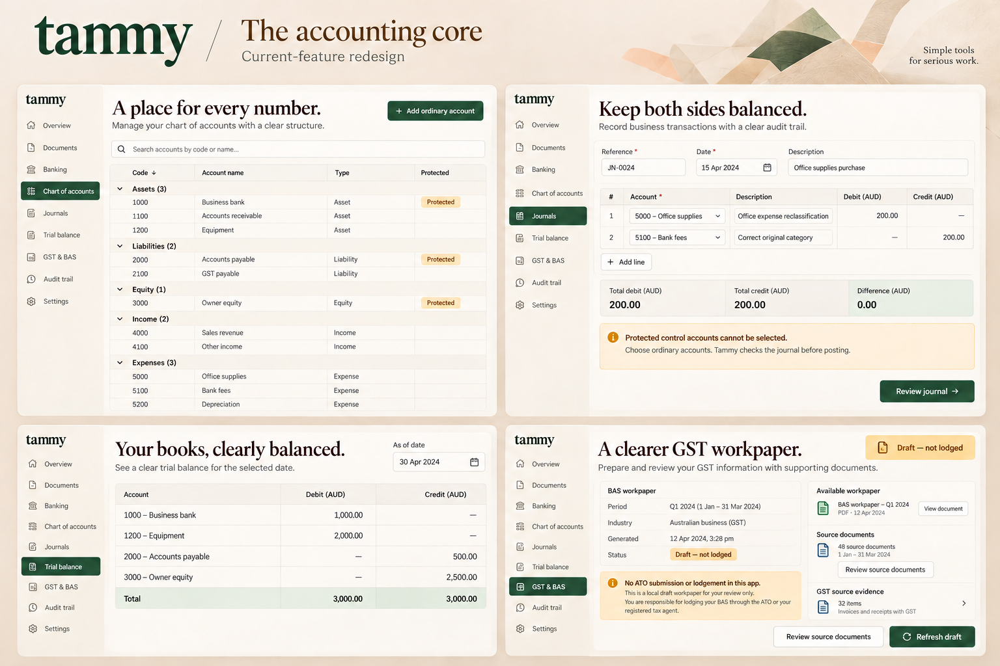
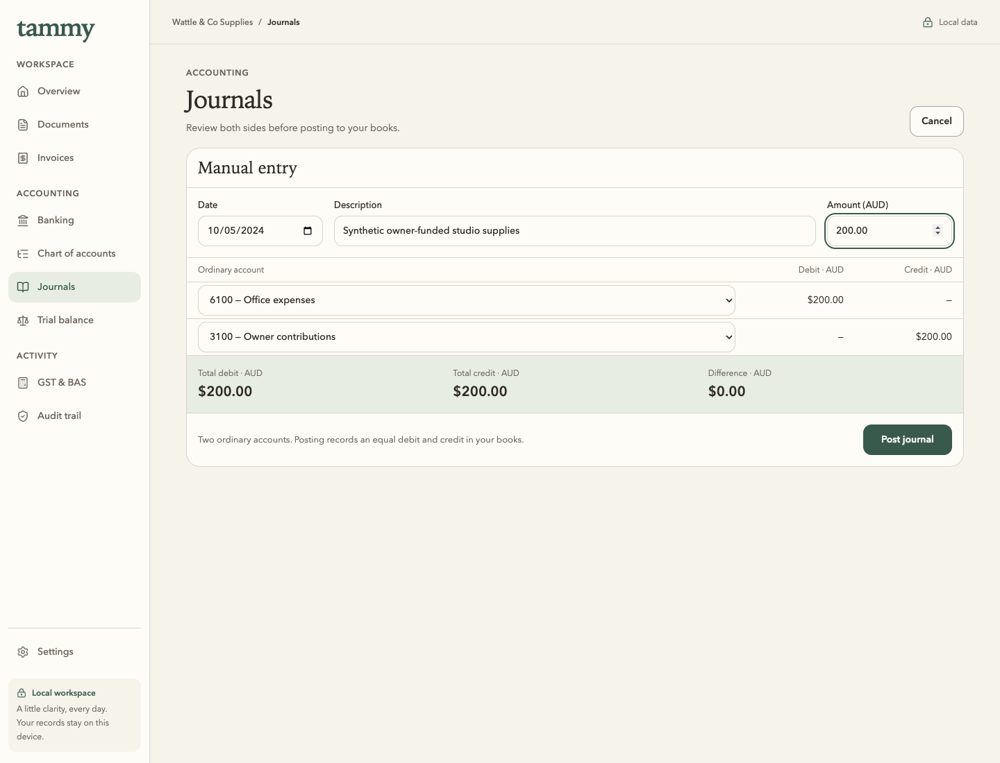
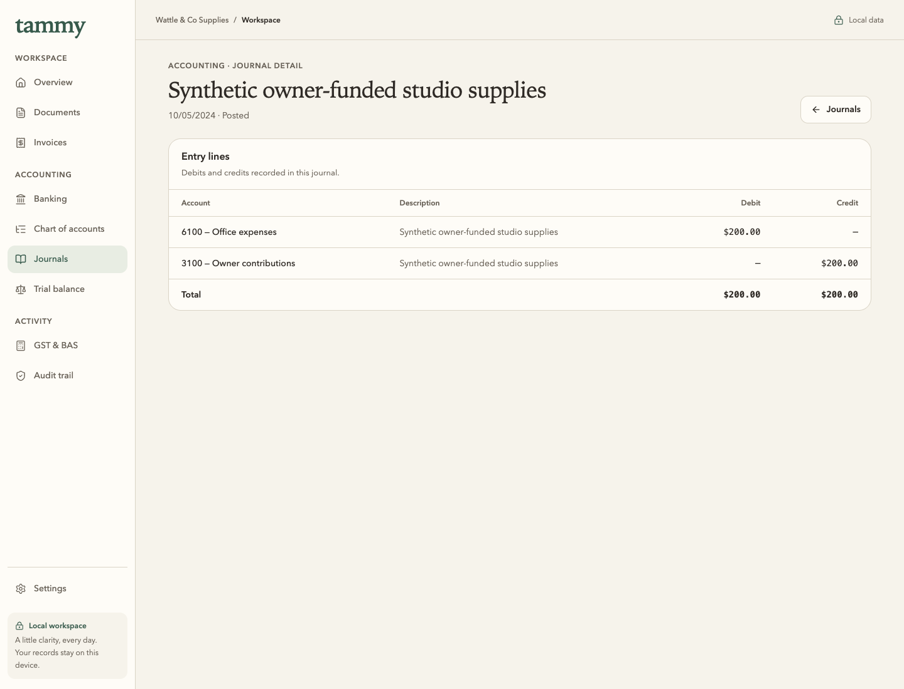
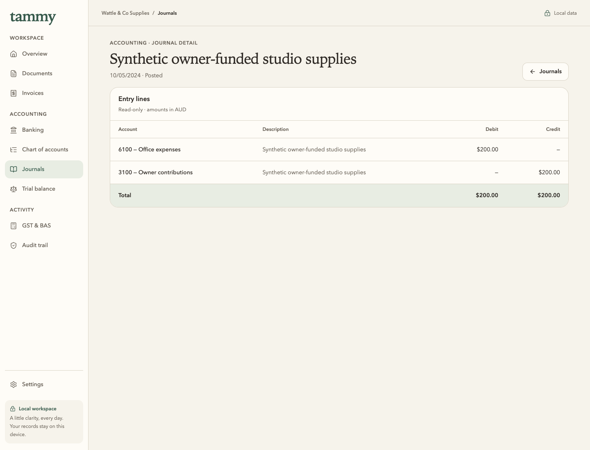
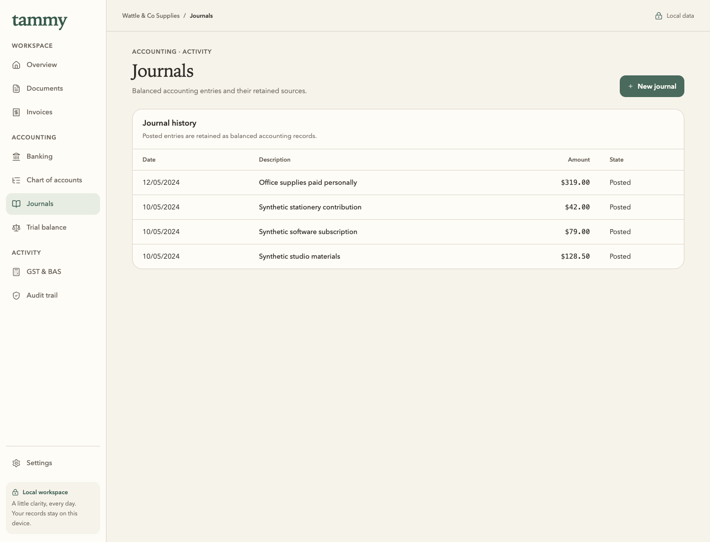
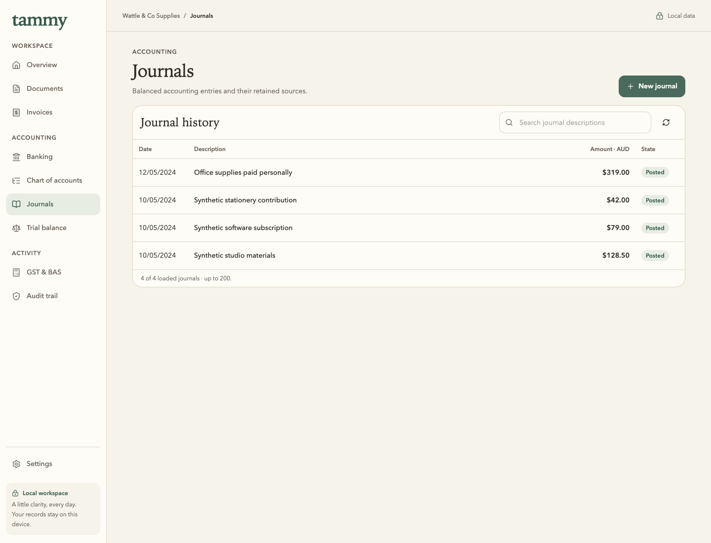
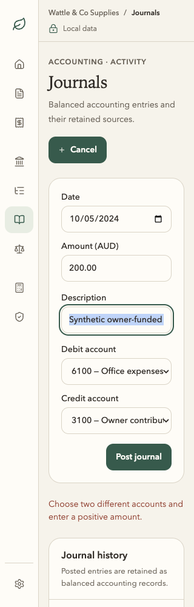
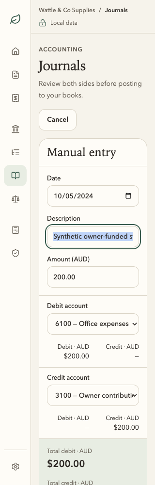

Existing direct Post journal semantics remain. No generated reference numbering, Add line, approval stage, reversal, stored draft or automatic posting is invented. The local history search explicitly covers loaded rows, up to 200.
Posted detail · read-only, exact and balanced




History · compact search beside the real loaded data




320px · field focus, natural scrolling and reachable posting




320px bottom-of-form Tab focus and reachable Post journal · 320px actual keyboard table scrolling · 900px layout


Recovery and retained outcomes
| Milestone | Before | After |
|---|---|---|
| Invalid same-account request; no write | Original | Focused persistent feedback |
| Return after one confirmed posting | Original | Retained history |
| Search retained through detail/back | Search not previously present | Real retained query and focus |
| No matching description; clear recovery | Search not previously present | Explicit no-results state |